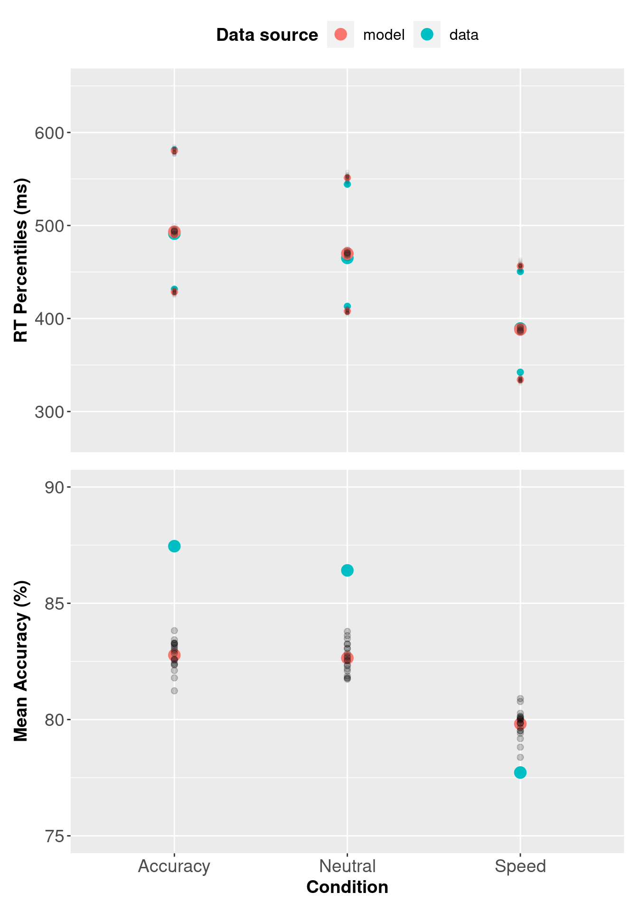
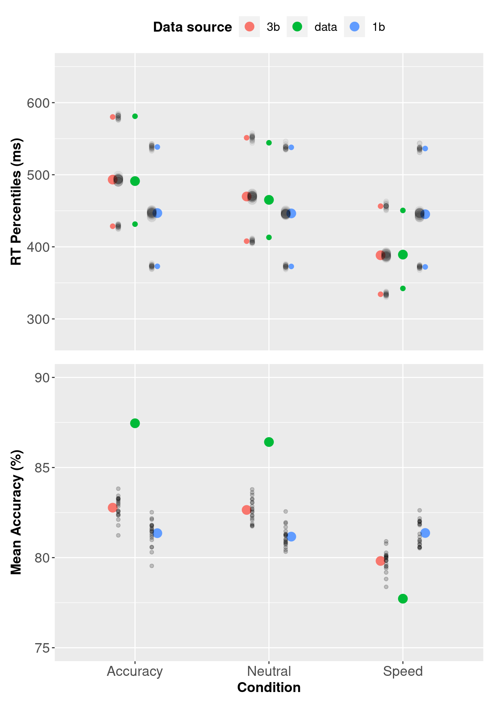
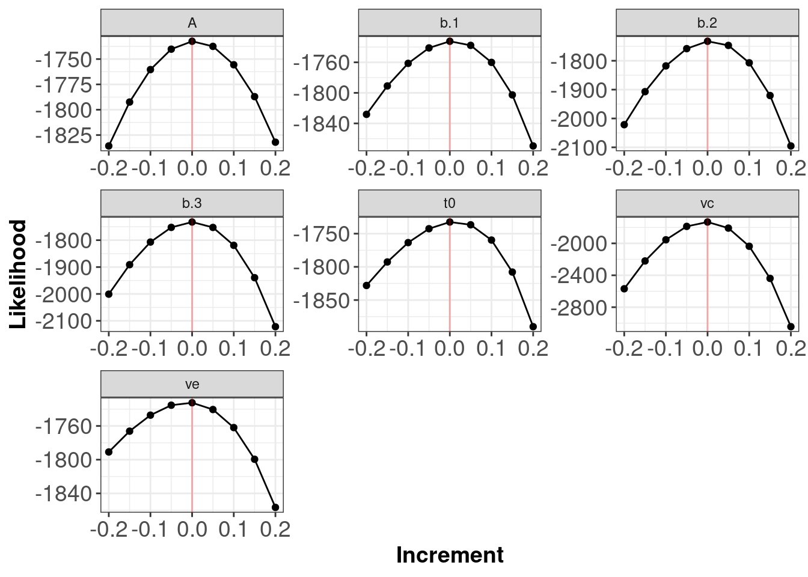

Chapter 3 PMwG sampler and sequential sampling models
In this chapter we’ll demonstrate how to use the PMwG sampler with a sequential sampling model; the Linear Ballistic Accumulator (LBA).
Please ensure the PMwG and rtdists packages are loaded.
3.1 The speed-accuracy trade-off in perceptual decisions
We demonstrate the application of the LBA with the PMwG sampler in a study of perceptual decision making. Forstmann et al. (2008) looked at neural correlates of decision making under time pressure, with an aim to identify areas of the brain associated with speed-accuracy trade-off. Imaging (fMRI) and behavioural data was collected; however, we will analyse behavioural data from the decision-making task only. In terms of modelling the data, Forstmann expected to find differences in thresholds for each of the three speed-emphasis conditions. We have included the data from Forstmann et al in the PMwG package as a data frame named forstmann. The sampler requires a data frame with a subject column. The subject column data type can be a factor or numeric.
Table 3.1 shows the first ten trials from the Forstmann dataset. Participants (n = 19) were asked to indicate whether a cloud of dots in a random-dot kinematogram moved to the left or the right of the screen. The IV was a within-subject, speed-accuracy manipulation where, before each trial began, participants were instructed to make their choice accurately (condition = 1), with urgency(condition = 3)or were presented with a neutral message (condition = 2). Stimuli moved either left (stim = 1) or right (stim = 2) and responses were left (resp = 1) or right (resp = 2). Response times (rt) were recorded in seconds. For more information about the design of the experiment please see the original paper.
| subject | condition | stim | resp | rt |
|---|---|---|---|---|
| 1 | 1 | 2 | 2 | 0.4319 |
| 1 | 3 | 2 | 2 | 0.5015 |
| 1 | 3 | 1 | 1 | 0.3104 |
| 1 | 1 | 2 | 2 | 0.4809 |
| 1 | 1 | 1 | 1 | 0.3415 |
| 1 | 2 | 1 | 1 | 0.3465 |
| 1 | 2 | 1 | 1 | 0.3572 |
| 1 | 2 | 2 | 2 | 0.4042 |
| 1 | 2 | 1 | 1 | 0.3866 |
| 1 | 1 | 2 | 2 | 0.3683 |
3.2 Linear Ballistic Accumulator Parameters
There are preliminary steps we need to complete before running the sampler. Let’s begin by defining the Linear Ballistic Accumulator (LBA) (Brown and Heathcote 2008) model parameters.
bthreshold parameter (the evidence required to trigger a response)vis the mean drift rate or average speed of evidence accumulationAis the range of start points for accumulatorst0is non-decision timesvis the standard deviation of the across-trial distribution of drift rates
3.3 The log-likelihood function
3.3.1 What is a log-likelihood function?
If you’re unsure what a log-likelihood function is and/or does, see our explanation here.
3.3.2 Writing the log-likelihood function for the Forstmann data set
Just as we did with the SDT chapter, we will write a slow and a fast log-likelihood function. The trialwise (slow) log-likelihood function is approximately five times slower than the fast log-likelihood function because the dLBA function is called line-by-line (trialwise), where as the dLBA function is called once for all the data in the fast log-likelihood function. When writing a new log-likelihood function, we suggest starting with a slow, line-by-line function for easier debugging. See section 3.8 for a detailed debugging process.
The LBA log-likelihood function takes three arguments:
xis a named parameter vector (e.g.pars)datais your dataset (e.g.forstmann). Your dataset must include a"subject"columnsample = FALSEcalculates a density function orTRUEgenerates a posterior predictive sample that matches the shape of data.
The log-likelihood function shown below includes functions from the rtdists package for generating data and estimating density. If you’d like to run through this example, it is best to copy the tw_lba_ll function from the code block below rather than copying from the separate code chunks where curly braces have been removed.
Note: The trialwise log-likelihood is very slow and inefficient because rLBA and dLBA will be called on each line of the data. This will result in very slow sampling times and is a consequence of the rtdists package, not an issue with the PMwG sampling speed. If you have experience writing log-likelihoods, we recommend writing a faster version than our trialwise function, or use the fast log-likelihood we have written in section 3.3.3. If you are new to modelling, we recommend trying the trialwise (slow) log-likelihood function as it is easier to follow, troubleshoot and is less likely to result in errors.
Let’s begin by loading the rtdists package…
and now our complete trialwise (slow) log-likelihood function.
tw_lba_ll <- function(x, data, sample = FALSE) {
x <- exp(x)
if (any(data$rt < x["t0"])) {
return(-1e10)
}
if (sample) {
tmp <- numeric(nrow(data))
data$rt <- rep(NA, nrow(data))
data$resp <- rep(NA, nrow(data))
} else {
out <- numeric(nrow(data))
}
for (i in 1:nrow(data)) {
A = x["A"]
b = x[paste0("b.", data$condition[i])] + A
vc = x["vc"]
ve = x["ve"]
t0 = x["t0"]
s = c(1, 1)
if (data$stim[i] == 1) {
vs = c(vc, ve)
} else {
vs = c(ve, vc)
}
if (sample) {
tmp <- rLBA(n = 1,
A = A,
b = b,
mean_v = vs,
sd_v = s,
t0 = t0,
dist = "norm",
silent = TRUE
)
data$rt[i] <- tmp$rt
data$resp[i] <- tmp$resp
} else {
out[i] <- dLBA(rt = data$rt[i],
response = data$resp[i],
A = A,
b = b,
mean_v = vs,
sd_v = s,
t0 = t0,
dist = "norm",
silent = TRUE
)
}
}
if (sample) {
return(data)
} else {
bad <- (out < 1e-10) | (!is.finite(out))
out[bad] <- 1e-10
out <- sum(log(out))
return(out)
}
}The first line in the tw_lba_ll function (Line 2 below) takes the exponent of the parameter values. We do this as the LBA requires positive parameter values that are on the real line. Line 3 and 4 then checks whether response times (RTs) are faster than the non-decision time parameter t0, and returns a low value if t0 is larger than RT, indicating that the given value of t0 is unlikely.
Now we create a vector with values sampled from the posterior distribution OR estimating the density. If sample = TRUE, we remove all responses (resp) and RTs. This means when we return data, we are returning the posterior predictive data which matches with the associated subject and condition and then generate them from the random function of the model.
If sample = FALSE (the else statement from line 11) we create an out vector, with a length equal to the number of rows in the dataset, and store the likelihood value for each subject and condition.
if (sample) {
tmp <- numeric(nrow(data))
data$rt <- rep(NA, nrow(data))
data$resp <- rep(NA, nrow(data))
} else {
out <- numeric(nrow(data))
}Next, we loop over rows in the dataset. In this for loop, we find the values (x) of each parameter in our model for each row, so that any conditional parameters (for example b in our model) are correctly assigned. For example, we want to calculate the density for a model that has three threshold parameters (one for each condition; 1 = accuracy, 2 = neutral, or 3 = speed). In the loop, we paste b. to the condition in row [i] and add A (the start point - we do this to ensure the threshold is greater than the starting point).
On line 22 we set the order of our drift rate parameters. Recall that stim = 1 is a stimulus moving to the left. dLBA requires the drift accumulators to be matched i.e. when data$stim[i] == 1, the drift rate for the correct accumulator (vc) is in position one, so we order the drift rates; vs = c(vc, ve). The else statement addresses right moving stimuli data$stim[i] == 2, the incorrect accumulator (ve) is the first accumulator, so the drift rate parameter order is vs = c(ve, vc). This ensures that the correct (vc) and error (ve) drift rates match with the corresponding accumulators for given stimuli.
for (i in 1:nrow(data)) {
A = x["A"]
b = x[paste0("b.", data$condition[i])] + A
vc = x["vc"]
ve = x["ve"]
t0 = x["t0"]
s = c(1, 1)
if (data$stim[i] == 1) {
vs = c(vc, ve)
} else {
vs = c(ve, vc)
}The following section calls the relevant rtdists function depending on whether we are sampling from the posterior predictive distribution (rLBA) or estimating the density (dLBA). We then input the parameters from above (using the names set above) into the relevant function. When generating data from the posterior predictive distribution (Line 30-37), rLBA is called for each line of the data, storing the generated rt and response given the posterior parameter estimates in the tmp vector (which we then reassign to the empty data$rt and data$resp columns). We set n = 1, since we are calling rLBA on 1 row of the data. When estimating the density (Line 42 to 50), dLBA is called for each line of the data, storing the probability of the rt and response under the proposed parameters (x) in the out vector.
if (sample) {
tmp <- rLBA(n = 1,
A = A,
b = b,
mean_v = vs,
sd_v = s,
t0 = t0,
dist = "norm",
silent = TRUE
)
data$rt[i] <- tmp$rt
data$resp[i] <- tmp$resp
} else {
out[i] <- dLBA(rt = data$rt[i],
response = data$resp[i],
A = A,
b = b,
mean_v = vs,
sd_v = s,
t0 = t0,
dist = "norm",
silent = TRUE
)
}This final section tells the function what to return; data - when sampling posterior predictive data (Line 56) - or the sum of the likelihoods - when estimating density (Line 57 - 61). On line 58 we take all implausible likelihood values, assign them to the bad object and then (line 59) set them to an extremely unlikely value, to prevent numerical errors. The final two lines within the else statement take the log of all likelihood values, sums them, assigns the model’s log-likelihood value to the out variable and returns that value.
3.3.3 Fast LBA Log-likelihood Function
As the data is large, and the dLBA function takes some time to run, the log-likelihood code above is computationally inefficient. There are several ways to improve the log-likelihood’s performance; in our example below, we reduce the number of calls to dLBA to one call. We do this by passing a list of dLBA parameter values for the length of the data.
Note: When generating posterior predictive data, the rLBA function is still executed for each row of data; however, it is only executed several times, so computational efficiency is not compromised.
fast_lba_ll3b <- function(x, data, sample = FALSE) {
x <- exp(x)
if (any(data$rt < x["t0"])) {
return(-1e10)
}
if (sample) {
data$rt <- rep(NA, nrow(data))
data$resp <- rep(NA, nrow(data))
} else {
out <- numeric(nrow(data))
}
if (sample) {
for (i in 1:nrow(data)) {
A = x["A"]
b = x[paste0("b.", data$condition[i])] + A
vc = x["vc"]
ve = x["ve"]
t0 = x["t0"]
s = c(1, 1)
if (data$stim[i] == 1) {
vs = c(vc, ve)
} else {
vs = c(ve, vc)
}
tmp <- rLBA(n = 1,
A = A,
b = b,
mean_v = vs,
sd_v = s,
t0 = t0,
dist = "norm",
silent = TRUE
)
data$rt[i] <- tmp$rt
data$resp[i] <- tmp$resp
}
} else {
all_b <- numeric(nrow(data))
vlist <- list("v.1" = numeric(nrow(data)),
"v.2" = numeric(nrow(data)))
stim <- levels(data$stim)
con <- levels(data$condition)
for (c in con) {
for (s in stim) {
use <- data$condition == c & data$stim == s
if (any(use)) {
bs = x[paste0("b.", c)] + x["A"]
all_b[use] = bs
vc = x["vc"]
ve = x["ve"]
if (s == 1) {
vlist$v.1[use] = vc
vlist$v.2[use] = ve
} else {
vlist$v.1[use] = ve
vlist$v.2[use] = vc
}
}
}
}
out <- dLBA(rt = data$rt,
response = data$resp,
A = x["A"],
b = all_b,
mean_v = vlist,
sd_v = c(1, 1),
t0 = x["t0"],
distribution = "norm",
silent = TRUE
)
}
if (sample) {
return(data)
} else {
bad <- (out < 1e-10) | (!is.finite(out))
out[bad] <- 1e-10
out <- sum(log(out))
return(out)
}
}You should improve your log-likelihood’s performance as you see fit. When you’re confident that your log-likelihood code functions correctly, we suggest saving it as a separate script so it can be sourced and loaded when running the sampler. If you’re learning how to write log-likelihood functions, take a look at our troubleshooting section for tips. In our experience, a very large proportion of problems with sampling and inference are caused by inadequate checking and care in the likelihood function.
3.4 PMwG Framework
Now that we have a log-likelihood function, we can set up the PMwG sampler. Running the sampler follows the same procedure outlined in the SDT chapter; we need to set up a vector of model parameter names, create a priors object, source our LBA log-likelihood script and then create our sampler object.
Let’s begin by creating a vector of model parameter names, which we’ll use in our log-likelihood function. You can name this object as you wish; however, in our example, we name it pars. 1 For the forstmann dataset, we use three threshold parameters (one b for each condition) because we assume that the condition has an effect on level of caution, we include two drift rate parameters: ve for the incorrect accumulator and vc for the correct accumulator, a start point parameter A and a non-decision time t0 parameter.
We’ve made a decision to set the sv to 1 to satisfy the scaling properties of the model. As such, we haven’t included the sv parameter in the pars vector - it is found in the LBA’s log-likelihood function (see above).
For the mean of the distribution for random effects (theta_mu), we assume a multivariate normal prior. The user can specify the mean and variance of this prior distribution using the object priors, which has elements theta_mu_mean and theta_mu_var. A typical setting for LBA models is to set theta_mu_mean to be a zero vector and to set theta_mu_var to be a multiple of the identity matrix, e.g. with 9 on the diagonal (representing a standard deviation of 3 for the subject-level means in the prior).
We create our priors object; a list that contains two components:
theta_mu_meana vector containing the prior for model parameter meanstheta_mu_varthe prior covariance matrix for model parameters.
Now source and load your log-likelihood script before you create the sampler object.
Next we specify the PMwG sampler object.
The pmwgs function takes a set of arguments (listed below) and returns a list containing the required components for performing the particle metropolis within Gibbs steps.
data =your data - a data frame (e.g.forstmann) with a column for participants calledsubjectpars =the model parameters to be used (e.g.pars)prior =the priors to be used (e.g.priors)ll_func =name of log-likelihood function to be used (e.g.fast_lba_ll3b)
3.4.1 Model start points
There is also an option to set model start points. We have specified sensible start points for the forstmann dataset under the LBA model. If you choose not to specify start points, the sampler will randomly sample points from the prior distribution.
The start_points object contains two vectors:
mua vector of start points for the mu of each model parametersig2vector containing the start points of the covariance matrix of covariance between model parameters.
Note: Start points must be on the real line. Our log-likelihood function immediately takes the exponent of the start points and only returns positive values, so we use the log of sensible start points here.
3.4.2 Running the sampler
Setup is now complete and we can run the sampler. First, we use the init function to generate initial start points for the random effects and store them in the sampler object. Here we specify start points by providing values for the start_mu and start_sig arguments. Note: The init stage can take some time to run because it uses a large number of particles
To run the sampler, we use the run_stage function. To execute the run_stage function, you must provide values for two arguments:
pmwgs =thesamplerobject including parameters that were created by theinitfunction above.stage =the sampling stage (In order;"burn","adapt"or"sample").
The following arguments listed below are optional:
iter =is the number of iterations for the sampling stage. For burn-in, it is important to have enough iterations that the chains converge on the posterior distribution. Default = 1000.particles =is the number of proposals (particles) generated for each random effect, on each iteration. Default = 1000, but set smaller or larger in order to target a reasonable acceptance rate (i.e. 10-60%).display_progress =display a progress bar during samplingepsilon =is a value greater than 0 which scales the variance of the proposal distribution. Smaller values (i.e. narrower proposal distributions) can lead to higher acceptance rates, but slower coverage of the posterior. Smaller values are especially useful when the number of random effects is large (e.g. >10). The default is adaptively chosen based on the number of parameters.n_cores =the number of cores on a machine you wish to use to run the sampler. This allows sampling to be run across cores (parallelising for subjects). Default = 1. Note: Settingn_coresgreater than 1 is only permitted on Linux and Mac OS X machines.
The first sampling stage is burn-in "burn". The burn-in stage allows time for the sampler to move from the (arbitrary) start points that were provided by the user to the mode of the posterior distribution. We take the sampler object created in the init function above, set the stage argument to "burn" and assign the outcome to an object called burned. Note: You should visually check the chains for convergence/stationarity after burn-in.
Next is the adaptation stage "adapt". The adaptation stage draws samples using a simple, but relatively inefficient proposal distribution (the same proposal distribution as the "burn"stage). Enough samples are drawn to allow the algorithm to estimate a much more sophisticated and efficient proposal distribution, using conditional normal distributions. We take the burned object created in the previous stage and set iterations iter = to a high number (e.g. 10000), as it should exit before reaching this point. If it doesn’t, there is likely an issue with acceptance rates, the likelihood function or limited data to operate on (i.e. few trials in some conditions). Here, we have saved the outcome of the adaptation stage to an object called adapted.
The final stage is the sampling stage "sample". The sampling stage uses the sophisticated and adaptive conditional normal proposal distributions. This allows for very efficient sampling, using far fewer particles. Samples from this stage are taken from the ‘posterior distribution’ and stored in the sampled object.
The sampled object includes all samples from the "sample" stage above and the following elements:
data: the data (data frame) you included in your analysispar_names: parameter namesn_pars: number of parametersn_subjects: number of subjectssubjects: subject IDs (1:n)prior: list of the prior usedll_func: the likelihood function specifiedsamples:alpha: three dimensional array of random effects draws (dim = parameters x subjects x samples)theta_mu: two dimensional array of parameter draws (dim = parameters x samples)theta_sig: three dimensional array of covariance matrix draws (dim = covariance x samples)stage: specifies the stage the sample is from (length = samples)subj_ll: likelihood value for each subject for each iteration (dim = subject x samples)a_half: the parameter used in calculating the inverse Wishart (dim = parameters x samples)idx: total number of sampleslast_theta_sig_inv: the inverse of the last sample for theta_sig (the variance-covariance matrix).
You should save your sampled object at this point.
3.4.3 Determining estimation settings for the PMwG sampler
Deciding on values for iterations and particles (and epsilon) is entirely model and data dependent. As model complexity increases, so to does the number of particles required. Increasing the number of particles gives the PMwG sampler a greater chance of finding a new particle on each iteration. For epsilon, as the number of parameters increases, the epsilon value decreases because smaller epsilon values restrict the sampling range/space. As a result, reaching the posterior space is slower, however, it means that we generate more particles closer to the current particle, which increases the amount of new particles accepted (i.e. acceptance rate). For the iterations, this also links in with number of particles and the value of epsilon. The main aim of the initial stages is to reach the posterior space and generate a conditional distribution from which we draw particles for each subject. If a model is complex, epsilon is small and there are few new particles on each iteration, we may need more iterations to ensure we get to this space OR we may need more particles to increase the amount of new particles on each iteration - meaning it is quicker to reach the posterior space. Note that increasing the particles and iterations will increase the time taken to run (with increased particles taking longer as this is evaluated for each subject). Ultimately, we should aim for between 10% and 80% new particle rates in the burn-in stage, and by the end of burn-in, we should see stationarity in the parameter estimates.
3.5 Simulating Posterior Predictive Data
We can generate posterior predictive data by setting sample = TRUE in our log-likelihood function to generate response times and responses given the posterior parameter estimates for each subject. To do this, we use the gen_pp_data function below, which calls the log-likelihood function embedded in our sampled object. The gen_pp_data function takes four arguments:
sampled: is the object/output from the PMwG samplern: the number of posterior samplesll_func =: the log-likelihood function embedded in thesampledobjectrbind.data =: bind the rows of each predictive sample into a rectangular array, or leave as a list.
gen_pp_data <- function (sampled, n, ll_func = sampled$ll_func, rbind.data = TRUE) {
sampled_stage <- length(sampled$samples$stage[sampled$samples$stage == "sample"])
iterations <- round(seq(from = (sampled$samples$idx - sampled_stage),
to = sampled$samples$idx,
length.out = n))
data <- sampled$data
S <- sampled$n_subjects
pp_data <- list()
for (s in 1:S){
print(paste0("subject", s))
for (i in 1:length(iterations)) {
print(i)
x <- sampled$samples$alpha[, s, iterations[i]]
names(x) <- sampled$par_names
out <- ll_func(x = x,
data = data[data$subject == unique(data$subject)[s], ],
sample = TRUE)
if (i == 1){
pp_data[[s]] = cbind(pp_iter = i, out)
}
else {
pp_data[[s]] = rbind(pp_data[[s]],
cbind(pp_iter = i, out))
}
}
}
if (rbind.data){
tidy_pp_data <- do.call(rbind, pp_data)
return(tidy_pp_data)
}
else {
return(pp_data)
}
}We generate 20 posterior predictive data samples.
The returned data is a matrix with the same dimensions and names as forstmann – with the addition of pp_iter column. pp_iter is the iteration of posterior sample (in this example i = 1:20) for the corresponding subject. We now have two matrices based on samples from either model. The response (resp) and response time (rt) columns now contain posterior predictive data.
In the next section, we will use the posterior predictive data to assess descriptive adequacy.
3.5.1 Assessing Descriptive Adequacy (goodness of fit)
Now we will plot the posterior predictive data against the observed data. In the section below we compare observed RTs against predicted RTs, which is common for RT modelling; however, the code could also be modified for different types of data.
# Subject x condition Q25, median and Q75 response time + mean accuracy
# Forstmann dataset
pq3b <- forstmann %>%
group_by(condition, subject) %>%
summarise(Q25 = quantile(rt, prob = 0.25),
median = median(rt),
Q75 = quantile(rt, prob = 0.75),
acc = mean(ifelse(stim == resp, 1, 0)),
.groups = "keep"
)
# Subject x condition Q25, median and Q75 response time for posterior predictive data
pp_pq3b <- pp_data_3b %>%
group_by(condition, pp_iter, subject) %>%
summarise(Q25 = quantile(rt, prob = 0.25),
median = median(rt),
Q75 = quantile(rt, prob = 0.75),
acc = mean(ifelse(stim == resp, 1, 0)),
.groups = "keep"
)
# Combine data with posterior predictive data and add data source
pq3b <- bind_rows(cbind(src = rep("data", nrow(pq3b)), pq3b),
cbind(src = rep("model", nrow(pp_pq3b)), pp_pq3b)
)
# Mean Q25, median, Q4 and accuracy for data and posterior predictive data
av_pq3b <- pq3b %>%
group_by(src, condition) %>%
summarise_at(vars(Q25:acc), mean)
# Variances of posterior samples
pp_var3b <- pq3b %>%
filter(src != "data") %>%
group_by(condition, pp_iter, src) %>%
summarise_at(vars(Q25:acc), mean)
# Convert source column to a factor and add labels
av_pq3b$src <- factor(av_pq3b$src,
levels = c("model", "data"),
labels = c("model", "data")
)
pp_varsrc3b <- factor(pp_var3b$src,
levels = c("model", "data"),
labels = c("model", "data")
)
# Rename conditions
levels(av_pq3b$condition) <-
levels(pp_var3b$condition) <- c("Accuracy", "Neutral", "Speed")
# Convert rt to milliseconds and accuracy to percentage
av_pq3b$acc <- 100 * av_pq3b$acc
pp_var3b$acc <- 100 * pp_var3b$acc
av_pq3b[, c("Q25", "median", "Q75")] <- 1000 * av_pq3b[, c("Q25", "median", "Q75")]
pp_var3b[, c("Q25", "median", "Q75")] <- 1000 * pp_var3b[, c("Q25", "median", "Q75")]## Warning: The `legend.title.align` argument of `theme()` is deprecated as of ggplot2 3.5.0.
## ℹ Please use theme(legend.title = element_text(hjust)) instead.
## This warning is displayed once every 8 hours.
## Call `lifecycle::last_lifecycle_warnings()` to see where this warning was generated.
##Evaluating different models - single threshold LBA
In this section we will evaluate different LBA models. For each model, we will the estimate posterior distribution, generate posterior predictive data, and then compare those against observed data.
In this example we assume that each participant’s level of caution does not change with emphasis instructions i.e. the threshold for Accuracy, Neutral, and Speed conditions is the same. We will call this our “single threshold LBA model”. The single threshold LBA model’s log-likelihood has one b parameter, instead of three (see line 18, 31 and 64 below). For each model, we will estimate the posterior distribution, generate posterior predictive data, and then compare these against the empirical data.
For brevity, we specify only the ‘fast’ log-likelihood function for the single threshold model.
fast_lba_ll1b <- function(x, data, sample = FALSE) {
x <- exp(x)
if (any(data$rt < x["t0"])) {
return(-1e10)
}
if (sample) {
tmp <- numeric(nrow(data))
data$rt <- rep(NA, nrow(data))
data$resp <- rep(NA, nrow(data))
} else {
out <- numeric(nrow(data))
}
if (sample) {
for (i in 1:nrow(data)) {
A = x["A"]
b = x["b"] + A
vc = x["vc"]
ve = x["ve"]
t0 = x["t0"]
s = c(1, 1)
if (data$stim[i] == 1) {
vs = c(vc, ve)
} else {
vs = c(ve, vc)
}
tmp <- rLBA(n = 1,
A = A,
b = b,
mean_v = vs,
sd_v = s,
t0 = t0,
dist = "norm",
silent = TRUE
)
data$rt[i] <- tmp$rt
data$resp[i] <- tmp$resp
}
} else {
vlist = list("v.1" = numeric(nrow(data)),
"v.2" = numeric(nrow(data)))
for (c in levels(data$condition)) {
for (s in levels(data$stim)) {
use <- data$condition == c & data$stim == s
vc = x["vc"]
ve = x["ve"]
if (s == 1) {
vlist$v.1[use] = vc
vlist$v.2[use] = ve
} else {
vlist$v.1[use] = ve
vlist$v.2[use] = vc
}
}
}
out <- dLBA(rt = data$rt,
response = data$resp,
A = x["A"],
b = x["b"] + x["A"],
mean_v = vlist,
sd_v = c(1, 1),
t0 = x["t0"],
distribution = "norm",
silent = TRUE)
}
if (sample) {
return(data)
} else {
out<-sum(log(pmax(out, 1e-10)))
return(out)
}
}3.5.2 PMwG framework for a single threshold model
The PMwG sampler procedure remains the same for all models. For our three threshold LBA model, we need the updated log-likelihood function from above, an updated parameter vector, start points and priors.
# Load the log-likelihood script
source(file = "fast_lba_ll1b.R")
# Specify the parameter vector with single threshold (b) parameter
pars <- c("A","b","vc","ve","t0")
# Specify a priors list
priors <- list(
theta_mu = rep(0, length(pars)),
theta_sig = diag(rep(1, length(pars)))
)
# Setup your sampler object - include your data, parameter vector,
# priors and log-likelihood function
# Note: Your log-likelihood function must be loaded before this point
sampler <- pmwgs(
data = forstmann,
pars = pars,
prior = priors,
ll_func = fast_lba_ll1b
)
# Start points are not included in this example
# Initialise the sampler
sampler <- init(sampler)
# Burn-in stage
burned <- run_stage(sampler,
stage = "burn",
iter = 500,
particles = 1000,
epsilon = .5)
# Adaptation stage
adapted <- run_stage(burned,
stage = "adapt",
iter = 10000,
particles = 1000,
epsilon = .5)
# Sample stage
sampled <- run_stage(adapted,
stage = "sample",
iter = 1000,
particles = 200,
epsilon = .5)Note: we keep the priors, start points, number of iterations and particles the same as our three threshold LBA model, so there is no bias for either model.
3.6 Checking Descriptive Adequacy of 1b model.
The checking procedure below is the same as the three threshold LBA model, except we use the single threshold LBA model’s sampled object/data.
As we did for the three threshold LBA model, we generate 20 posterior predictive data samples. Note: this function is from section 3.5
# Subject x condition Q25, median and Q75 response time + mean accuracy
# Forstmann dataset
pq1b <- forstmann %>%
group_by(condition, subject) %>%
summarise(Q25 = quantile(rt, prob = 0.25),
median = median(rt),
Q75 = quantile(rt, prob = 0.75),
acc = mean(ifelse(stim == resp, 1, 0)),
.groups = "keep"
)
# Subject x condition Q25, median and Q75 response time for posterior predictive data
pp_pq1b <- pp_data_1b %>%
group_by(condition, pp_iter, subject) %>%
summarise(Q25 = quantile(rt, prob = 0.25),
median = median(rt),
Q75 = quantile(rt, prob = 0.75),
acc = mean(ifelse(stim == resp, 1, 0)),
.groups = "keep"
)
# Combine data with posterior predictive data and add data source
pq1b <- bind_rows(cbind(src = rep("data", nrow(pq1b)), pq1b),
cbind(src = rep("model", nrow(pp_pq1b)), pp_pq1b)
)
# Mean Q25, median, Q4 and accuracy for data and posterior predictive data
av_pq1b <- pq1b %>%
group_by(src, condition) %>%
summarise_at(vars(Q25:acc), mean)
# Variances of posterior samples
pp_var1b <- pq1b %>%
filter(src != "data") %>%
group_by(condition, pp_iter, src) %>%
summarise_at(vars(Q25:acc), mean)
# Convert source column to a factor and add labels
av_pq1b$src <- factor(av_pq1b$src,
levels = c("model", "data"),
labels = c("model", "data")
)
pp_varsrc1b <- factor(pp_var1b$src,
levels = c("model", "data"),
labels = c("model", "data")
)
# Rename conditions
levels(av_pq1b$condition) <-
levels(pp_var1b$condition) <- c("Accuracy", "Neutral", "Speed")
# Convert rt to milliseconds and accuracy to percentage
av_pq1b$acc <- 100 * av_pq1b$acc
pp_var1b$acc <- 100 * pp_var1b$acc
av_pq1b[, c("Q25", "median", "Q75")] <- 1000 * av_pq1b[, c("Q25", "median", "Q75")]
pp_var1b[, c("Q25", "median", "Q75")] <- 1000 * pp_var1b[, c("Q25", "median", "Q75")]
3.7 Model Comparison
In this section, we are going to compare the three threshold model and the single threshold model for the Forstmann et al. (2008) data to determine which model best represents the data. We begin by using a graphical method i.e. plotting the modelled data against the observed data.
3.7.1 Assessing Descriptive Adequacy Graphically
We can assess descriptive adequacy graphically by plotting the observed data, three threshold model and single threshold model data on a single plot.
# Subject x condition Q25, median and Q75 response time + mean accuracy
# Forstmann data
pq <- forstmann %>%
group_by(condition, subject) %>%
summarise(Q25 = quantile(rt, prob = 0.25),
median = median(rt),
Q75 = quantile(rt, prob = 0.75),
acc = mean(ifelse(stim == resp, 1, 0)),
.groups = "keep"
)
# Subject x condition Q25, median and Q75 response time for posterior predictive data
#3b model
pp_pq3b <- pp_data_3b %>%
group_by(condition, pp_iter, subject) %>%
summarise(Q25 = quantile(rt, prob = 0.25),
median = median(rt),
Q75 = quantile(rt, prob = 0.75),
acc = mean(ifelse(stim == resp, 1, 0)),
.groups = "keep"
)
# Subject x condition Q25, median and Q75 response time for posterior predictive data
#1b model
pp_pq1b <- pp_data_1b %>%
group_by(condition, pp_iter, subject) %>%
summarise(Q25 = quantile(rt, prob = 0.25),
median = median(rt),
Q75 = quantile(rt, prob = 0.75),
acc = mean(ifelse(stim == resp, 1, 0)),
.groups = "keep"
)
# Combine data with posterior predictive data for 1b and 3b models + add data source
pqall <- bind_rows(cbind(src = rep("data", nrow(pq)), pq),
cbind(src = rep("3b", nrow(pp_pq3b)), pp_pq3b),
cbind(src = rep("1b", nrow(pp_pq1b)), pp_pq1b)
)
# Mean Q25, median, Q4 and accuracy for data and posterior predictive data
av_pq <- pqall %>%
group_by(src, condition) %>%
summarise_at(vars(Q25:acc), mean)
# Variances of posterior samples
pp_var <- pqall %>%
filter(src != "data") %>%
group_by(condition, pp_iter, src) %>%
summarise_at(vars(Q25:acc), mean)
# Convert source column to a factor and add labels
av_pq$src <- factor(av_pq$src,
levels = c("3b", "data", "1b"),
labels = c("3b", "data", "1b")
)
pp_varsrc <- factor(pp_var$src,
levels = c("3b", "data", "1b"),
labels = c("3b", "data", "1b")
)
# Rename conditions
levels(av_pq$condition) <-
levels(pp_var$condition) <- c("Accuracy", "Neutral", "Speed")
# Convert rt to milliseconds and accuracy to percentage
av_pq$acc <- 100 * av_pq$acc
pp_var$acc <- 100 * pp_var$acc
av_pq[, c("Q25", "median", "Q75")] <- 1000 * av_pq[, c("Q25", "median", "Q75")]
pp_var[, c("Q25", "median", "Q75")] <- 1000 * pp_var[, c("Q25", "median", "Q75")] The plots show that values in the three threshold model (red circles) better describe the data than the single threshold model (blue circles).
3.7.2 Model comparison via DIC
Another method of model comparison is using an information criterion such as the deviance information criterion (DIC). Here we provide a function for calculating DIC. Note: we recommend using marginal likelihood (Bayes factors) instead of DIC for model selection. For more information, see this paper on estimating the Marginal Likelihood via importance sampling.
pmwg_DIC <- function(sampled, pD = FALSE){
# Identify number of subjects
nsubj <- length(unique(sampled$data$subject))
# Mean log-likelihood of the overall (sampled-stage) model, for each subject
mean_ll <- apply(sampled$samples$subj_ll[, sampled$samples$stage == "sample"],
1,
mean)
# Mean of each parameter across iterations.
# Keep dimensions for parameters and subjects
mean_pars <- t(apply(sampled$samples$alpha[,, sampled$samples$stage == "sample"],
1:2,
mean))
# Name 'mean_pars' so it can be used by the log_like function
colnames(mean_pars) <- sampled$par_names
# log-likelihood for each subject using their mean parameter vector
mean_pars_ll <- numeric(ncol(mean_pars))
data <- transform(sampled$data,
subject = match(subject, unique(subject)))
for (j in 1:nsubj) {
mean_pars_ll[j] <- sampled$ll_func(mean_pars[j, ],
data = data[data$subject == j,],
sample = FALSE)
}
# Effective number of parameters
pD <- sum(-2 * mean_ll + 2 * mean_pars_ll)
# Deviance Information Criterion
DIC <- sum(-4 * mean_ll + 2 * mean_pars_ll)
if (pD){
return(c("DIC " = DIC, " Effective parameters" = pD))
}else{
return(DIC)
}
}We calculate the DIC value for each model by passing the sampled object into the pmwgDIC function.
DIC Effective parameters
-15381.53339 91.76401 DIC Effective parameters
-10778.94733 44.84388 The three threshold model has a lower DIC value than the single threshold model, indicating a better explanation of the data. Based on the graphical evidence and the DIC, we can be confident that the three threshold model (i.e the model where threshold is varied with speed and accuracy instructions) is a better fit to our data than the single threshold model.
3.8 Checking the LBA log-likelihood function
Here we show two ways to test your log-likelihood function. This method is not fail-safe, however, it allows you to establish whether your function operates as intended.
We will use the three threshold LBA model log-likelihood function in the following examples.
3.8.1 Test one: Do changes in parameter values cause changes in the returned log-likelihood?
We will test our log-likelihood functions by passing a parameter vector (x) of plausible, arbitrary values, followed by a second parameter vector with different, plausible, arbitrary values. If the log-likelihood functions are functioning correctly, we should see the log-likelihood value change with the change in parameter values. We may also wish to check that unrealistic parameter values are effectively dealt with (for example, t0 should not be able to be greater than any RTs).
Let’s compare the output from the trialwise log-likelihood function in section 3.3 and the fast log-likelihood function in section 3.3.3 :
## [1] -44505.89## [1] -44505.89Great – the log-likelihoods are the same. Now let’s change the parameter values, in particular, the three threshold parameters, and see if the log-likelihood changes.
## [1] -202667.3## [1] -202667.3These log-likelihoods are lower than the previous two, so the parameter (x) values are less accurate given the data. Notice how we can also use this process to check the fast, efficient log-likelihood function (fast_lba_ll3b) against the trialwise function (tw_lba_ll). Given the same data and parameter values - they should give the same output, as we see above.
Note: We only changed some named (x) parameter values. You could perform a thorough check by changing one parameter value at a time and see if there is a change in the log-likelihood.
This is a good first check to see if our log-likelihood is behaving as it should; change in log-likelihood value with a change in parameter values. However, our log-likelihood functions may contain inconsistencies, which leads us onto our second check.
3.8.2 Testing whether data generating parameter values have the highest likelihood
A more comprehensive way to test your log-likelihood function is to generate ‘synthetic’ data for which you know the data generating values. This is a form of ‘parameter recovery’, where you run the sampler on generated data and plot the log-likelihood change as x values move away from your data generating parameter x-values. If the data generating x-values have the highest log-likelihood, then it is likely that your function is working as intended.
There are two steps to this method:
- Assign values to parameters of the model - these are known as the generating values.
Note: ensure these are sensible values - for example in the LBA, we want the drift rate for the mismatch/error accumulator (ve) to be smaller than the match/correct accumulator (vc) and the non-decision time parametert0should not be too large.
- Produce profile plots to compare the log-likelihood of the
xparameter values against nearby values in the ‘synthetic’ data. You can write your own function for this, or use the function below.
Our plotting function takes two arguments:
sampleris the initiated sampler object. See section 3.4.2 above.generating_values = Nullcreate ‘generating values’ based ontheta_mufrom sampler object or use values output from the log-likelihood function.
profilePlot <- function(sampler, generating_values = NULL){
if(is.null(generating_values)){
# Create generating values based on theta_mu
generating_values <- sampler$samples$theta_mu
names(generating_values) <- sampler$par_names
} else{
names(generating_values) <- sampler$par_names
}
#Create test data set. We use a tenth of the total data for speed
test <- sampler$ll_func(x = generating_values,
data = sampler$data[c(1:(nrow(sampler$data) / 3)),],
sample = TRUE)
# n_values = number of values to test and plot.
n_values <- 9
tmp <- array(dim = c(n_values, sampler$n_pars))
# Scale for increment. Can be made smaller or larger.
# Here we use theta_mu - .2 to theta_mu + .2, with n_values length
increment <- seq(from = -.2,
to = .2,
length.out = n_values)
for (i in 1:sampler$n_pars){
for (j in 1:n_values){
# Use all generating values except the current parameter being tested
test_values <- generating_values
# Change the current parameter by adding the increment
test_values[i] <- generating_values[i] + increment[j]
# Test the likelihood given these new values and the test data
tmp[j, i] <- sampler$ll_func(x = test_values,
data = test,
sample = FALSE)
}
}
# Prepare output for plotting
colnames(tmp) <- sampler$par_names
tmp <- as.data.frame(tmp)
tmp <- tidyr::pivot_longer(tmp,
everything(),
names_to = "pars",
values_to = "likelihood")
tmp$increment <- rep(increment,
each = sampler$n_pars)
# Plot values for each parameter
ggplot2::ggplot(tmp,
aes(x = increment,
y = likelihood)
) +
geom_point() +
geom_line() +
facet_wrap(~pars,
scales = "free") +
theme_bw() +
theme(axis.title.y = element_text(size = 14, face = 'bold'),
axis.text.y = element_text(size=14),
axis.title.x = element_text(size = 14, face = 'bold'),
axis.text.x = element_text(size=14)
) + labs(x = "Increment",
y = "Likelihood") +
geom_vline(xintercept = 0,
color = "red",
alpha = 0.3)
}
The red line indicates the true generating parameter value (i.e. the data generating values for the parameters) have the best (highest) likelihoods.
Note: The plots above do not tell you if your log-likelihood is correct in the sense that you have written a log-likelihood for the model you actually want to test. The plots allow you to determine if your function is functioning as intended.
Below is output from a function with a potential error. We can see that the red lines indicating the generating parameter values (i.e. the data generating values for the parameters) do not have the best (highest) likelihoods. Plots with flat lines for parameter values would also be indicative of an error somewhere within your log-likelihood code.

References
The parameters you list in the
parsvector must match those included in your log-likelihood function i.e. they must have the same names and the same number of parameters. Refer to the troubleshooting section for more detail.↩︎